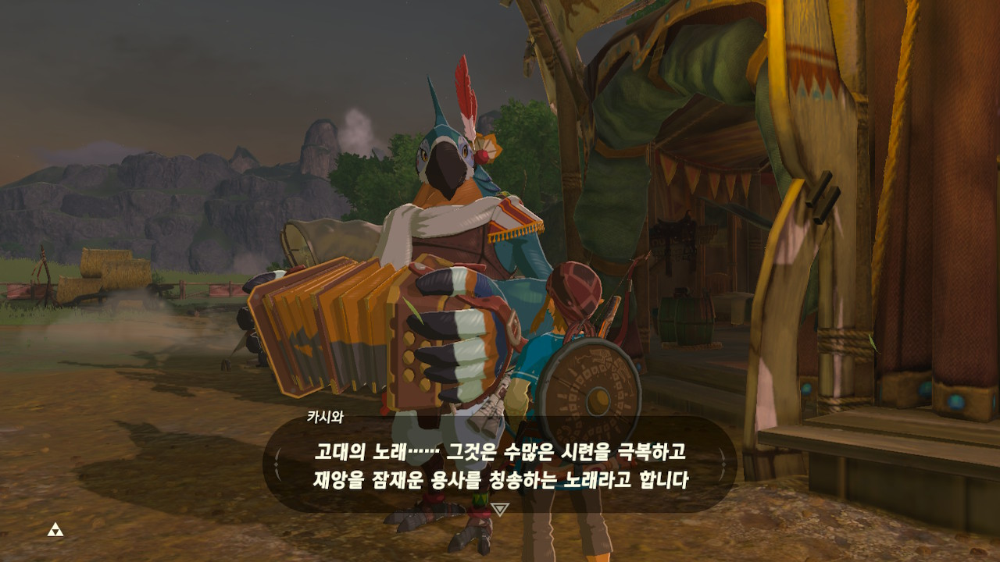

The opening sequence of the game is gold. It fills you with excitement and wonder, as well as gives you the insight of the imminent calamity. One of my favourite moments of the gameplay is finding Kass.  Kass is a bard who plays folk songs of the region that hints nearby shrines, as well as provide details of the main story line. As you can see in the video below, you randomly hear Kass' theme song and you know that he is nearby to give you hints.